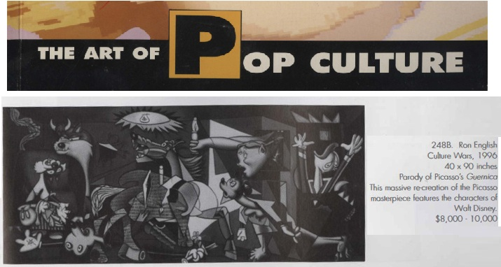
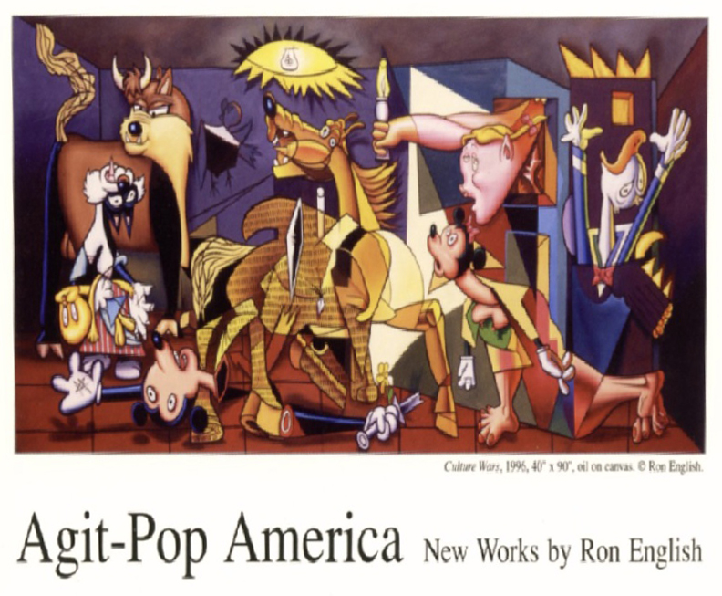

Exhibitions
Agit Pop America, Gallery Stendhal, New York, New York, US, April 3–30, 1997.
Literature
The Art of Pop Culture, auction catalogue, Guernsey’s, Pacific Design Center, West Hollywood, California, January 1998.
Notes
This work references Pablo Picasso’s Guernica (1937).
A black-and-white version of this work appears in the auction catalogue for The Art of Pop Culture, Guernsey’s, Pacific Design Center, West Hollywood, California, January 1998.
This work appears on the showcard for Agit Pop America.
Ancillary Documentation
The following materials document the Picasso source reference, auction-catalogue reproduction, and exhibition-showcard documentation associated with the work.



Selected Online Circulation
Selected examples of the work’s online circulation, reproduction, or discussion. This list is not exhaustive; it is intended to document representative appearances of the image beyond formal exhibition and publication records.